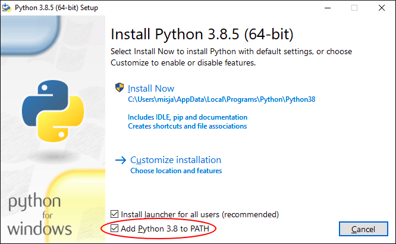

Software¶
We gebruiken Python 3. Je kan Python in de browser gebruiken (het is immers de 21e eeuw!) maar we raden je aan het op jouw systeem te installeren.
Om Python bestanden te kunnen bewerken heb je een teksteditor nodig (en niet een tekstverwerker als bijvoorbeeld Microsoft Word!). Standaard gebruiken we Visual Studio Code (VSCode), een gratis en veelgebruikte editor die beschikbaar is voor alle besturingssystemen (Mac, Windows en Linux). Heb je al een favoriet? Geen probleem, deze kan je blijven gebruiken!
Python¶
Als je al Python 3 (minimaal versie 3.8) hebt geïnstalleerd via bijvoorbeeld https://www.python.org of Anaconda Python dan kan je deze blijven gebruiken.
Windows¶
We volgen de aanbevelingen van Microsoft voor Python op Windows. Installeer Python via Windows Store, zoek daar naar de Python app (uitgever Python Software Foundation) en kies versie 3.8 of hoger.


WSL
Microsoft adviseert voor gevanceerde Python toepassingen Windows Subsystem for Linux (WSL). Ook WSL kan via Windows Store worden geïnstalleerd (kies daar voor Ubuntu als je nog niet goed bekend bent met Linux en WSL wilt proberen).
Voor leren programmeren is WSL niet nodig en is de Python app voldoende!
macOS¶
Sinds macOS 11.0 (“Big Sur”) is Python versie 3 op macOS standaard geïnstalleerd. Controleer dit door in Terminal (deze kan je onder hulpmiddelen vinden) het volgende te typen:
$ python3 --version
Als je command not found: python3 ziet dan is Python 3 niet geïnstalleerd en zal je dit met Homebrew moeten doen (zie Oudere versies).
Oudere versies¶
Op oudere macOS versies is allees de oude Python versie 2 standaard geïnstalleerd. Een optie is om de laatste versie van de Python website te downloaden maar dan zal je zelf steeds de website in de gaten moeten houden of nieuwere versies beschikbaar zijn: een betere manier is om Homebrew te gebruiken.
Installeer Homebrew op jouw Mac als je dit nog niet hebt gedaan. Met Homebrew installeer je dingen die je nodig hebt maar Apple helaaas niet levert, zoals bijvoorbeeld een up-to-date Python versie! Open Terminal en typ het nadat je Homebrew hebt geïnstalleerd het volgende om Python 3 te installeren:
$ brew install python3
Updates
Met Homebrew is het gemakkelijk Python (en andere software die je met Homebrew hebt geïnstalleerd) op nieuwere versies te controleren en te updaten:
$ brew update
$ brew upgrade
Linux¶
Linux gebruikers zullen Python 3 waarschijnlijk al op hun systeem beschikbaar hebben, controleer dit in een command line (terminal) met:
$ python3 --version
Als Python niet aanwezig is dan is aan te raden om de standaard Python 3 versie met een package manager te installeren.
Package managers
Linux: zoveel keus uit distributies met gelukkig maar een beperkt aantal package managers! Bijvoorbeeld, gebruik apt op distributies als Debian, Ubuntu of Mint:
$ sudo apt-get update
$ sudo apt-get install python3
of dnf op distributies als Fedora of Red Hat:
$ sudo dnf install python3
IPython¶
IPython is een interactieve Python shell die heel veel meer kan dan de standaard Python shell. IPython ga je gebruiken bij (bijna) alle opdrachten. IPython installeer je met … Python!
Editor¶
Tot slot heb je een editor nodig, Visual Studio Code (VSCode) is een flexibele texteditor die geschikt is voor het bewerken van Python bestanden. Door middel van uitbreidingen is het ook geschikt voor andere formaten en talen waar je later misschien ook mee gaat werken, bijvoorbeeld HTML, CSS, JavaScript of Java.
Download en installeer Visual Studion Code voor Mac, Windows of Linux.
Andere editors
Wij adviseren Visual Studio Code voor als je nog geen editor hebt geïnstalleerd. Het is dus niet verplicht, je kan jouw eigen editor blijven gebruiken als je wilt! Zie verder ook platte tekst voor meer suggesties voor het bewerken van tekstbestanden.
Configuratie¶
Configuratie van VSCode zal vanzelf gaan: de eerste keer dat je Python code schrijft en opslaat met een .py bestandsextensie (zie ook werken met platte tekst) zal VSCode jou vragen of je de Python uitbreiding voor VSCode wilt installeren. Hier kies je natuurlijk voor :)
macOS
De VSCode Python uitbreiding ondersteunt macOS met Python versie 2 niet, zorg dat je Python 3 hebt geïnstalleerd.
De Python uitbreiding helpt jou met het schrijven van correcte en goed geformatteerde code door onder andere het aanroepen van een linter en een formatter die jouw code controleert op fouten.
Linter¶
Een linter is een apart programma dat jouw code controleert op syntactische fouten en zal hints geven hoe je jouw code kan verbeteren.
VSCode zal jou op een gegeven moment vragen welke linter je wilt gebruiken (er zijn meerdere Python linters beschikbaar!), kies voor de eerste suggestie (pylint) als deze vraag jou wordt gesteld en VSCode zal deze voor je installeren.
Formatter¶
Ook een formatter is een apart programma. Waar een linter vooral let op hoe jouw code wordt uitgevoerd en eventuele fouten detecteert zal een formatter letten op stylistische kenmerken van jouw code en kan indien gewenst ook code formatteren. Bijvoorbeeld het volgende Python fragment,
print( 'Hallo!' )
zal een formatter als black (een populaire Python formatter) omzetten naar:
print("Hallo!")
De formatter past hier twee regels toe, ten eerste dat extra spaties binnen haken niet gewenst is en ten tweede en dat het beter is tekst tussen dubbele aanhalingstekens te plaatsen. Merk op dat beide valide Python fragmenten zijn, de formatter past alleen maar de stijl aan en niet de werking van de code.
VSCode zal vragen welke formatter je wilt gebruiken. Kies hier voor black en deze zal vervolgens voor jou worden geïnstalleerd.
Syntactische- en stylistische fouten?
Code schrijven lijkt soms op het schrijven van gewone tekst, bijvoorbeeld een brief. Naast correcte spelling zal een brief ook elementen moeten bevatten die de lezer verwacht zoals een adressering, aanhef en plaats en datum.
Een linter zal in het geval van een brief wijzen op spelfouten maar ook op het ontbreken van verplichte elementen. Een formatter zal stijlaanpassingen doen (maar niet de inhoud van de brief wijzigen) door bijvoorbeeld plaats en datum rechts uit te lijnen.
Python gebruikers zoals jij bepalen stijlregels: regels worden door gebruikers voorgesteld en ter stemming voorgelegd, de meest bekende (en meest toegepaste) set van stijlregels is vastgelegd in de Style Guide for Python Code (PEP8). Stijlregels zijn dus conventies (afspraken) en niet absolute waarheden!